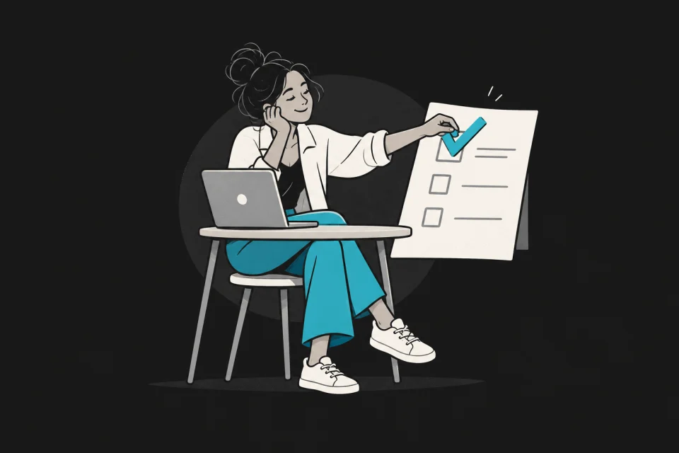
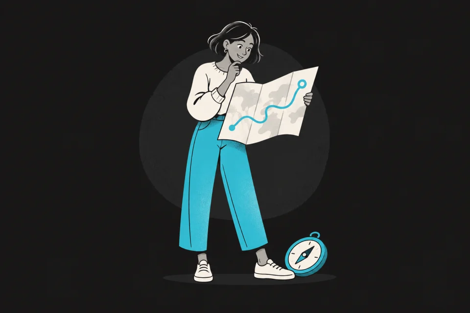
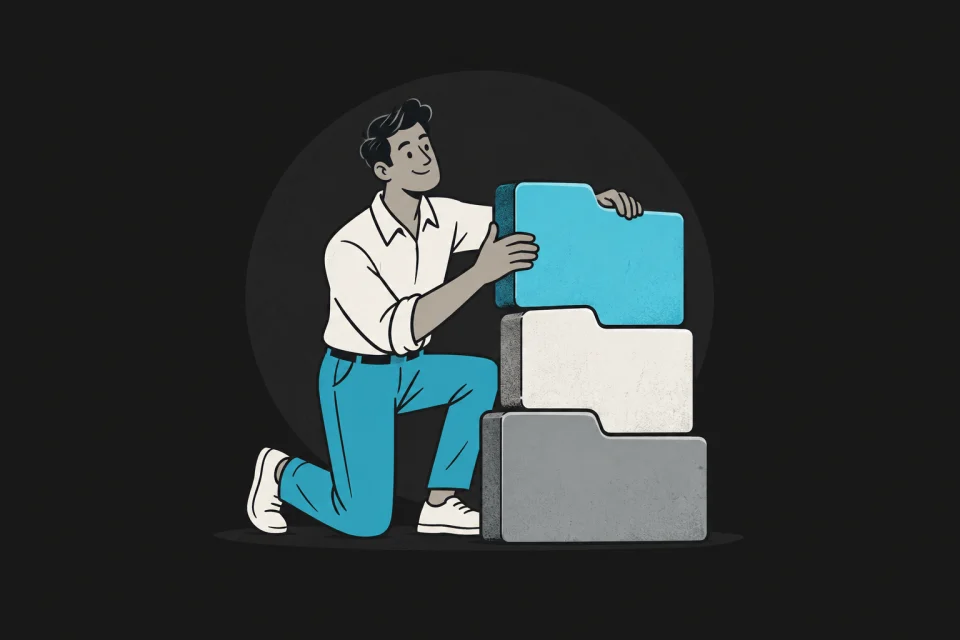

Comece por aqui
Perfil DISC
Observe tendências de ritmo, comunicação, estabilidade e relação com regras e detalhes.
Fazer assessment
Aprofundamento humano
Assessments para perceber como você tende a agir, aprender, decidir e se relacionar. Eles oferecem mapas para reflexão, não rótulos definitivos.
Começar pelo DISCBiblioteca de assessments
Seis caminhos para observar seus padrões. Escolha uma pergunta que faça sentido para o seu momento e leve a reflexão para a prática.
6 assessments disponíveis

Comece por aqui
Observe tendências de ritmo, comunicação, estabilidade e relação com regras e detalhes.
Fazer assessment
Assessment 02
Uma reflexão inspirada no framework de Richard Elmore sobre como você aprende e produz mudança.
Fazer assessment
Assessment 03
Como você tende a iniciar, organizar, improvisar e sustentar uma ação quando existe liberdade de escolha.
Fazer assessmentAssessment 04
Um retrato dimensional de cinco grandes traços de personalidade, sem encaixar você em um único tipo.
Fazer assessmentAssessment 05
Uma lente sobre motivações, estratégias recorrentes e possíveis pontos cegos.
Fazer assessmentAssessment 06
Explore os quatro pares de preferências popularizados pelo MBTI em um exercício autoral de percepção e decisão.
Fazer assessmentAssessment 01
Em cada rodada, escolha uma alternativa diferente para “mais”, “menos” e “pouco” parecida com você. Não existe resposta certa.
Rodada 1 de 3
0 de 10 respondidas
Em cada pergunta, marque a alternativa que tem MAIS a ver com você do que todas as outras.
Seu mapa DISC
Isso parece com você? Compare a leitura com situações reais. O valor está na conversa que o mapa provoca, não em defender uma letra.
Como esta área funciona
Um resultado não explica sozinho quem você é nem prevê tudo o que fará.
Mostramos distribuições e nuances, não apenas uma categoria vencedora.
As respostas ficam no navegador. Nada é enviado ou associado à sua conta.